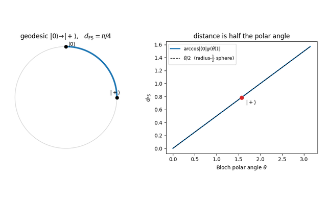

1 · Mathematical Foundations

Every later part averages some function of a random unitary, and to state what is being averaged one needs density matrices for the states, completely positive maps for the noisy evolutions, and a precise meaning for the word random. This part assembles that vocabulary from elementary pieces. The Lie algebras \(\mathfrak{u}(D)\) and \(\mathfrak{su}(D)\) are built from commutators and the matrix exponential, the geometry of pure states from the Fubini-Study metric, and the notion of a uniform distribution on \(U(D)\) from enough measure theory to make \(\sigma\)-additivity and measurability concrete. No prior exposure to Lie groups is assumed.
Two constructions do most of the later work. The Choi-Jamiołkowski isomorphism turns a quantum channel into a state on a doubled Hilbert space, converting questions about maps into questions about matrices. Schur-Weyl duality identifies the operators that commute with \(U^{\otimes k}\) for every \(U\) with the algebra generated by permutations of the \(k\) copies, which is why Haar averages over many entries collapse onto a small number of permutation terms. The notebooks work the \(k=2\) case in full, where the only operators in play are the identity and the SWAP.
One point deserves early emphasis. Closing a set of generators under repeated commutators produces the dynamical Lie algebra, and whether that algebra fills out all of \(\mathfrak{su}(D)\) or stays inside a subalgebra decides both whether a gate set is universal and how fast an operator can grow under the dynamics of later chapters.
Notebooks in this part
Bloch-sphere geodesics & the Fubini-Study metric
The natural distance between pure states.
Entanglement of a parametric two-qubit state
How entanglement tracks a tunable coupling.
Kraus operators, complete positivity, and entanglement fidelity.
Building an algebra by repeated commutators, and what makes a gate set universal.
Schur-Weyl duality for \(k=2\)
The symmetric/antisymmetric split and the SWAP operator.
Choi matrix of amplitude damping
Channels as states via Choi-Jamiołkowski.
Dimension of \(\mathfrak{u}(D)\) and \(\mathfrak{su}(D)\)
Counting generators.
Surjectivity of the exponential map
Why every unitary is an exponential.
What “uniformly random unitary” means, in the simplest case.
Geodesic length & the quantum speed limit
How fast a state can change.
Sectional curvature of \(SU(2)\)
Why nearby evolutions reconverge.
Differential geometry of state space
The quantum geometric tensor, Berry curvature, and the Fubini-Study metric together.
Lebesgue vs counting measure and \(\sigma\)-additivity.
Borel \(\sigma\)-algebras & measurability on \(U(D)\)
Making “random” rigorous.
Where to start. If you only want the tools used later, do Schur-Weyl duality, Haar invariance, and the depolarizing channel first, everything in Part 3 builds directly on them.